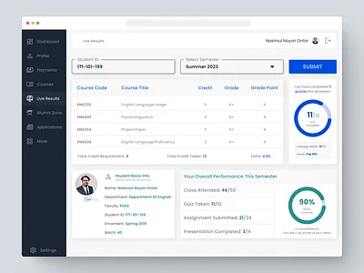

Security Projects

Secure School Portal
Authentication system with secure data storage and role-based access control.
Secure Result Checker
Protected student data using validation and backend verification.

Cybersecurity Awareness Platform
Educational platform focused on phishing awareness and cyber hygiene training.